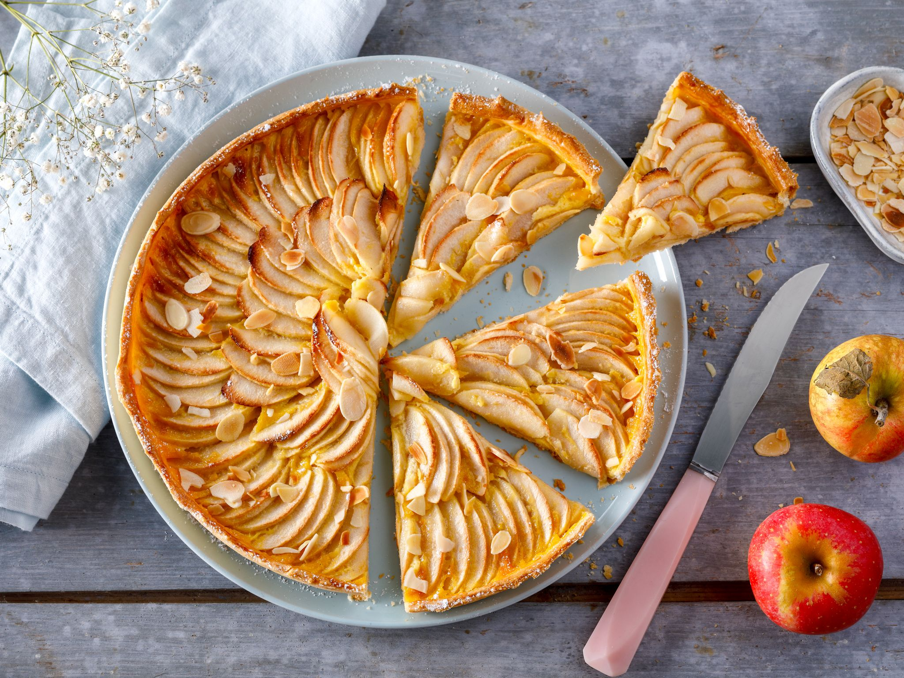
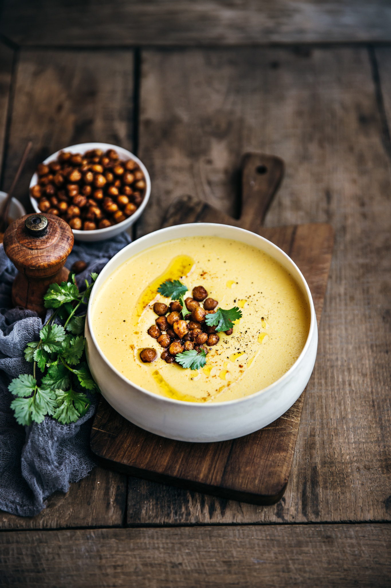

tarte aux pommes  Ingredients 4 pommes 60 g de beurre doux 120 g de farine de blé 1 jaune d'oeuf 1 cuillère à café de sucre / 1 pincée de sel
Ratatouille Ingredients 1 gros oignon, haché 225 g (1/2 lb) de champignons blancs, coupés en quartiers 1 aubergine, coupée en cubes 2 poivrons jaunes, épépinés et coupés en cubes 2 courgettes, coupées en cubes
velouté  Ingredients 1 gros oignon, haché 225 g (1/2 lb) de champignons blancs, coupés en quartiers 1 aubergine, coupée en cubes 2 poivrons jaunes, épépinés et coupés en cubes 2 courgettes, coupées en cubes